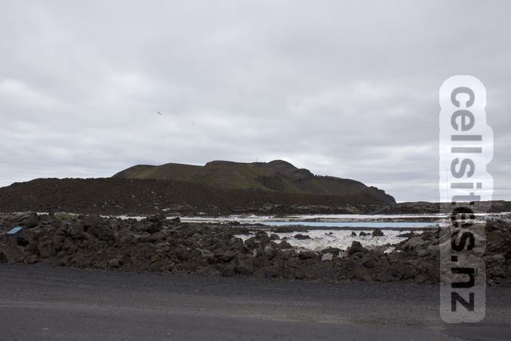
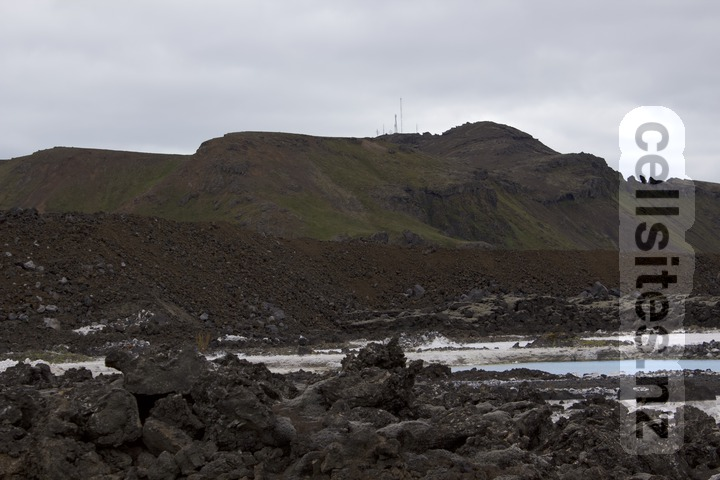
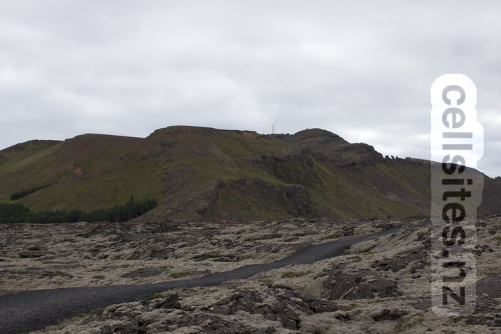
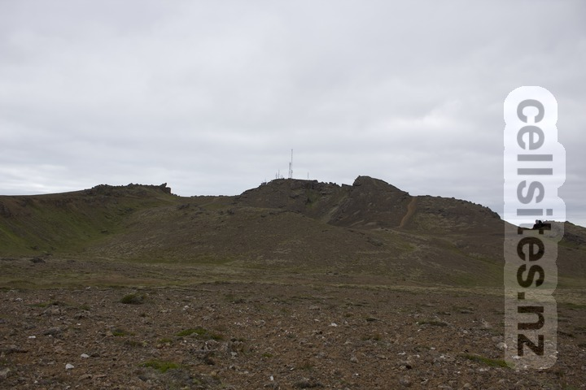
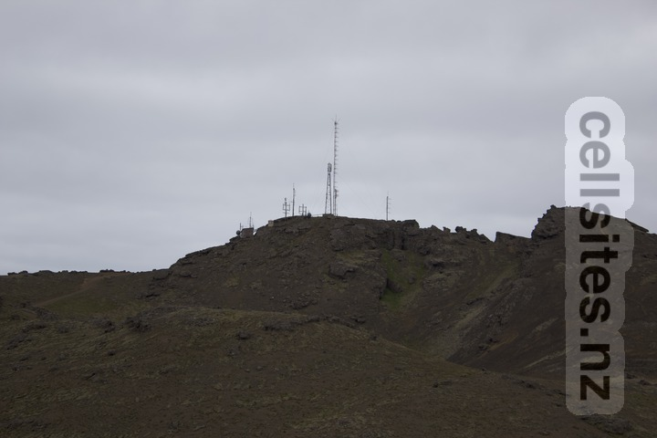
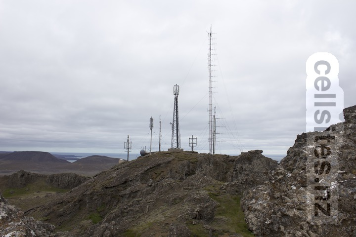
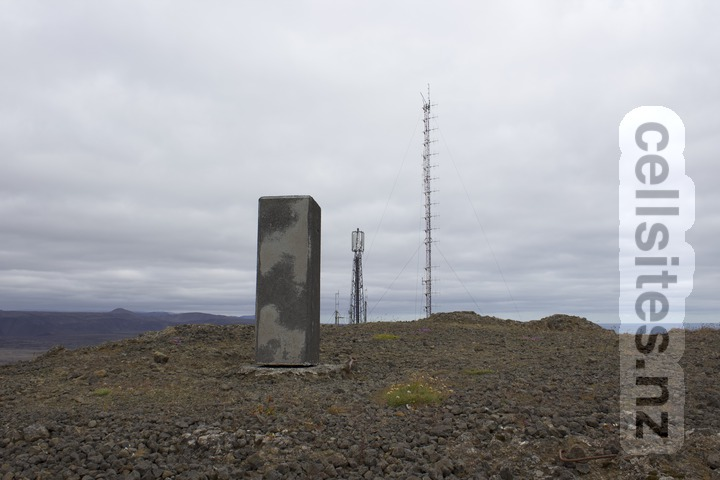
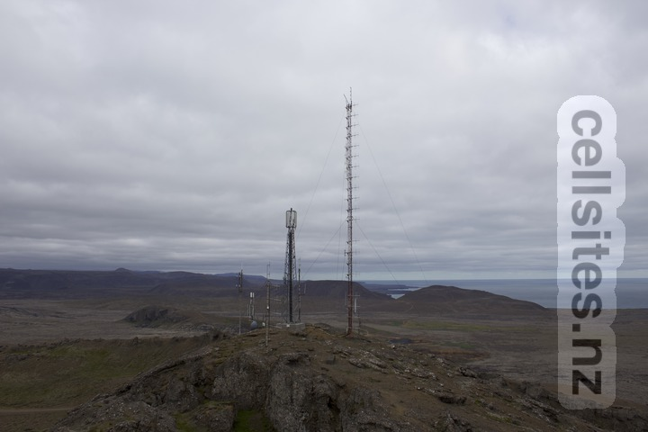
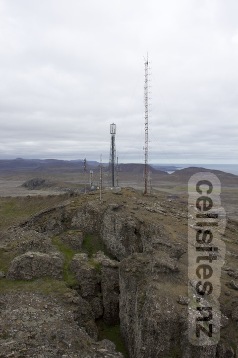
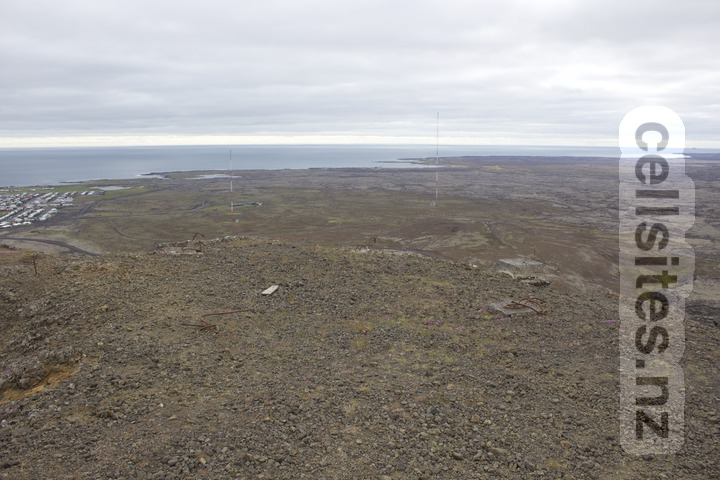

While holidaying at the nearby Blue Lagoon, I noticed what seemed like wireless transmitters on top of a nearby mountain.

I set off on foot to see if I could find a path up the mountain.

Eventually I found a path through volcanic landscape.

At some point, I left the path to make my own way up the mountain.

Battling the cold, I made my way closer and closer.

Finally, I arrived as close as I could to the site.

I also found a stone marking the very top of Þorbjörn.

Another viewpoint of the site.

The reason I could not get any closer becomes obvious!

As a bonus I also discovered a shortwave site nearby.